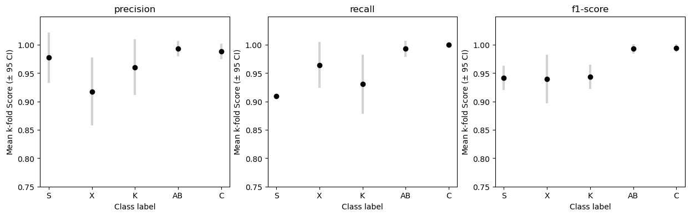
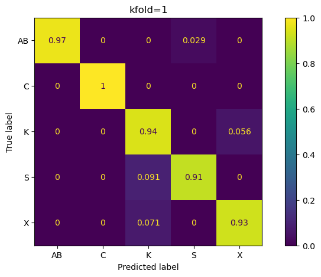

TBC
"model_version": "yolov8n-cls.pt"
"batchsz": 32
"epochs": 50 (Default no. epochs)
"imgsz": 256
"patience": 5 (Early stopping if performance not improved over 5 Epochs)
"kfolds": 4
"train_prop": 0.8
"datasetsz": 600 (Total no. images)
Prediction confidence scores for each class:
*Classes have been ordered by increasing number of images in training set.
Mean class performance metrics across k-folds:
Confusion matrices for each kfold:
